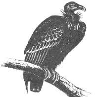
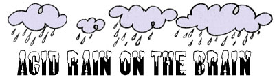

The government officials who are charged with protecting endangered species hatched another bad idea in April. The California Condor Recovery Team-a long arm of the U.S. Fish and Wildlife Service, the California Department of Fish and Game, and the National Audubon Society-is considering a plan to capture all the remaining wild condors, place them in the Los Angeles and San Diego zoos, and restock the wild with Andean condors, which are distant cousins found in South America. Proponents of the plan describe condor internment as "protective custody."
"It's a great ploy for zoos but a disaster for the wild condor," said David Phillips, FOE's wildlife projects director. "The program has been botched from the start, but this is the worst yet. For the past three years, every condor egg and nestling produced in the wild has been sent of to a zoo, and every bird they could get their hands on has been captured. Not one pair has been allowed to breed and raise young free from molestation."
True to form, the "CTeam" snatched the only remaining wild condor egg from its nest near Santa Barbara on April 23 and spirited it away to the San Diego zoo. Officials state that they took the egg to protect it from nearby ravens. (The parents of the egg, thought to be the sole pair of mating condors in the wild, weren't consulted.) Phillips, who has long been critical of the program to remove wild condors for captive breeding, believes that the C-Team's "intervention is causing the breakup of mating pairs."
If you'd like to protest the plan to remove all remaining condors from the wild, write to Donald Hodel, Secretary of the Interior, Washington, DC 20240, and the California Fish and Game Commission, 1416 9th St., Sacramento, CA 95814.
Condors need protection . . . therefore, they need the Endangered Species Act (ESA), the authorization and funding for which expire on September 30. The $27 million currently allocated to the ESA isn't nearly enough to list and protect all the endangered species, which are being driven to extinction at a worldwide rate of one to three per day. The U.S. Fish and Wildlife Service has identified 1,019 species that should be added to the list, but at the current rate-39 species per year have been added since 1973-that would take more than 25 years.
Urge your representatives to reauthorize the act and fund it at a higher level. And to get more information on this issue, along with a copy of the Endangered Species Reauthorization Bulletin, write to David Phillips, FOE, 1045 Sansome St., San Francisco, CA 94111.
A new study has found that precipitation in western states is becoming more acidic. Researchers for the World Resources Institute and the Energy and Resources Group of the University of California, Berkeley, found that acid rain is falling on Yosemite, Sequoia, Mount Ranier, North Cascades, and Rocky Mountain national parks.
Sulfur emissions from copper, zinc, and lead smelting-rather than those from coalburning power plants, which are thought to cause most of the problem in the East-now account for almost half of western acid precipitation. Existing smelters are scheduled to reduce emissions 30% by 1988, but other new sources may overwhelm this gain. For example, a copper smelter under construction in Nacozari, Mexico (60 miles south of the U.S border), will emit more than 500,000 tons of sulfur dioxide each year, becoming the second largest source of the pollutant in North America.
The effects of acid precipitation on lakes, wildlife, and trees have been widely reported, but much less has been presented on the damage to humans. Now a report in the December 21, 1984, issue of Science suggests that acid rain may contribute to brain disorders such as Alzheimer's disease, senile dementia, Parkinson's disease, and amyotrophic lateral sclerosis (Lou Gehrig's disease). Unusually high levels of aluminum have been found in the brain lesions common to victims of these disorders, and recent studies in Japan and Germany suggest that aluminum may play a causative role.
Here's how acid precipitation fits in: It seems that aluminum, which constitutes about 5% of the earth's crust, doesn't dissolve in neutral or basic water but passes readily into solution when the pH drops to significantly acidic levels. Acid rain, fog, sleet, and snow can dissolve aluminum in soil, lake bottom sediments, pipes, and the soldering materials used to join pipes. (Lead, cadmium, and mercury also dissolve more readily in acidic water.) Low-pH drinking water, then, can contain significant concentrations of aluminum (and of other toxic heavy metals that are known to be harmful).
EDITOR'S NOTE: The activities of the worldwide organization called Friends of the Earth-along with a broad range of other news concerning environmental developments-are described each month in its publication titled Not Man Apart. You can become a member of Friends of the Earth and receive the excellent tabloid by sending $25 ($100 for sponsor, $1,000 for life, $15 student/low income)-or $18 for a subscription only-to FOE, Dept. TMEN, 1045 Sansome St., San Francisco, CA 94111.
|
 |
 |
|